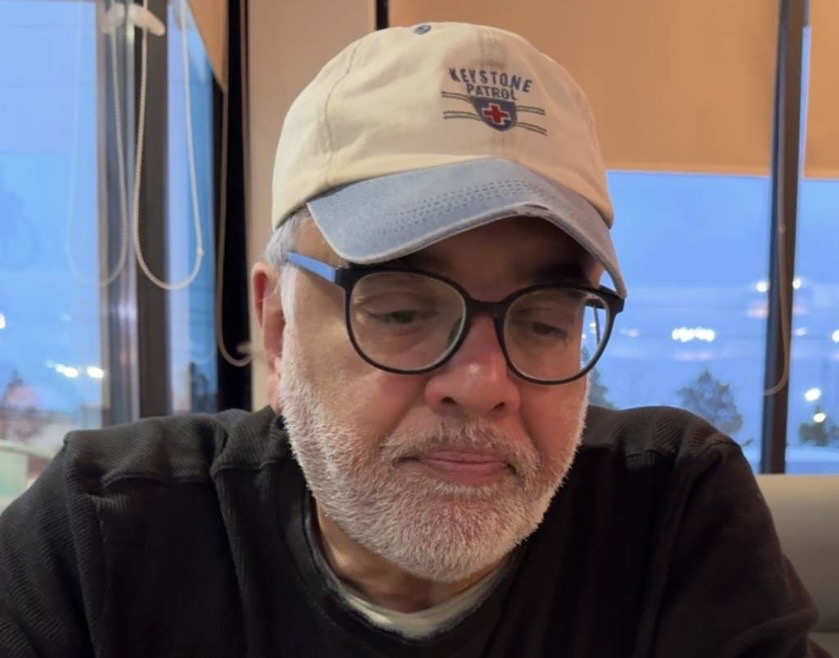

Hello,
On most days over the past four decades, I, like many others, offered my perspective and abilities, to create “things” of value — contributions that joined with the work of others, flowing onward like rain droplets in streams, converging into rivers and finally reaching the sea. For this, I have been sufficiently compensated.
As I entered the sixth decade of my life, I became keenly aware of how wasteful it would be to halt my journey there. Limiting myself to offering my set pieces of “preconceived value” to an external stack of “value widgets” was striping away any meaning I had found for myself in my work. The value I received from my efforts was becoming transient and short-lived.

I allowed myself the time, to pause, reflect, and reorient — to rethink how I should define what I value and which paths I might explore and why. I wished to create new meaningful experiences for myself.
I live in Chicago. I decided to live, walk, think, listen, read and write in the place that I had come to love. I was truly astonished by the energy and the resources, the city gave to me, to inspire and motivate myself. I began the journey into my self, to explore and experience the passion and harmony that I knew was buried there. I concluded that I would do better directing my outward actions from the inside.
As I began to look around, I discovered gems of wisdom that people had graciously left for me — in books, conversations, images and artwork — in the streets, in coffee-shops, buildings, libraries and museums — Inspirational gifts, given freely, that which they had acquired through much thought and effort. It was like having an infinitely large group of well-wishers who were willing to share their journeys for my reference and guide me through my own. I wasn’t going it alone.
I became fascinated by transitions I found between thoughts, words and images. I began to make word pictures to visualize what I was beginning to uncover. For the purposes of capturing my learnings, I stumbled upon three formats that seemed like they would work well.
Not long ago, people used to send postcards, from their travels, to friends and family. A postcard paired an image with a few carefully chosen words, their brevity allowing space for reflection. I found this approach worked well for me.
The second format I selected is a short story — drawn from historical events or
experiences of individuals — to highlight patterns and trends in how life’s movements and interactions influenced people of the time.
Thirdly, How would I re-tell the story of someone else's life? Would that make for interesting writing? Would I learn something about myself?
I am deeply appreciative of life’s offerings that has brought me to this point.
If you would like to read about my journey and my interpretations, please follow the links on the next page.